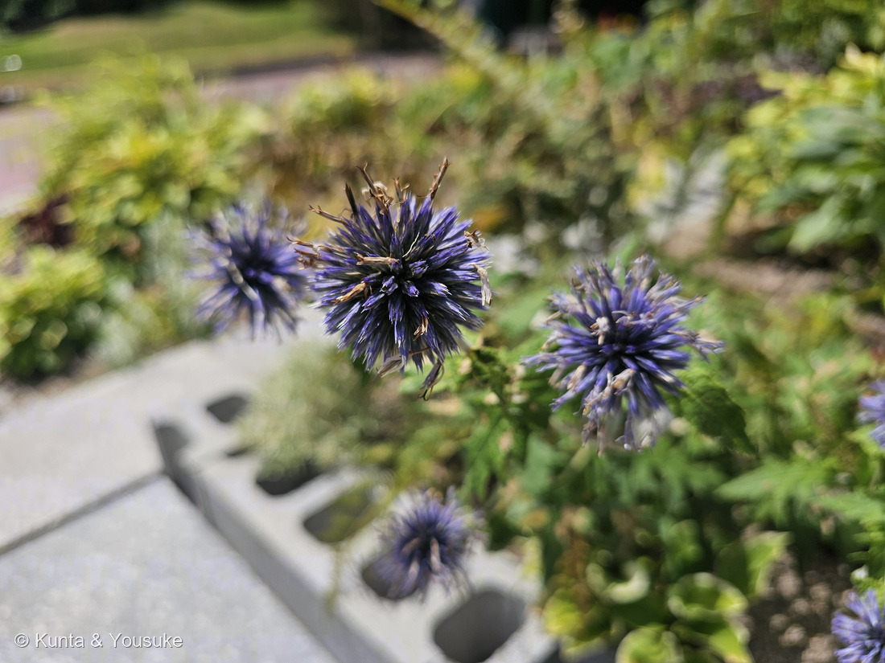
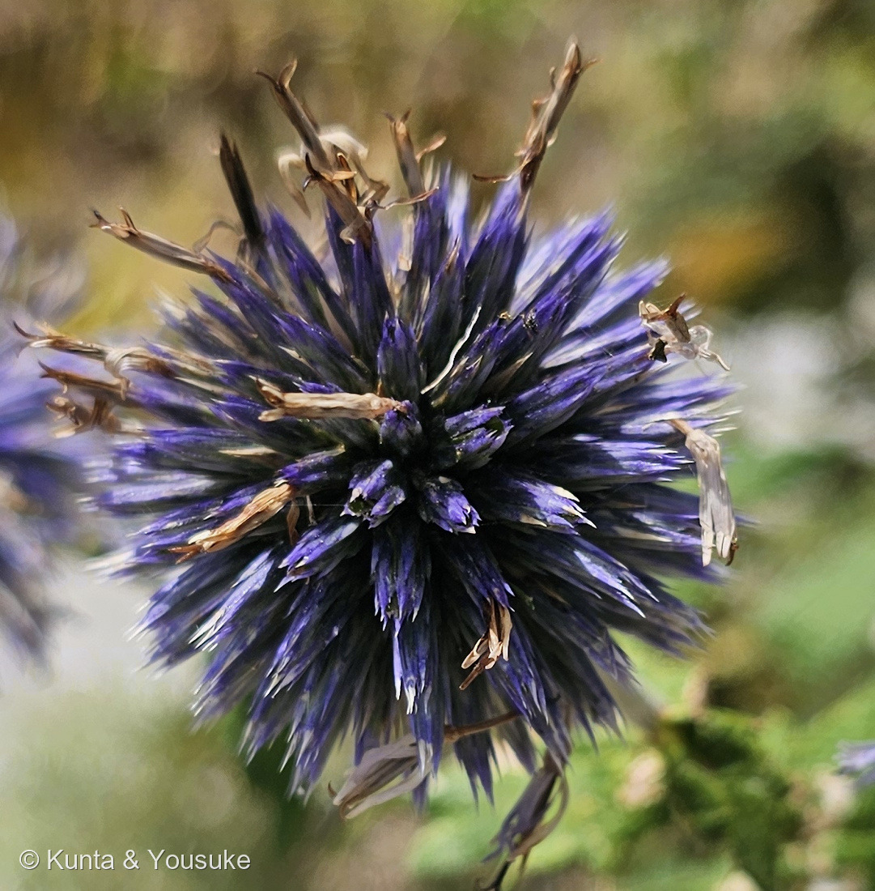
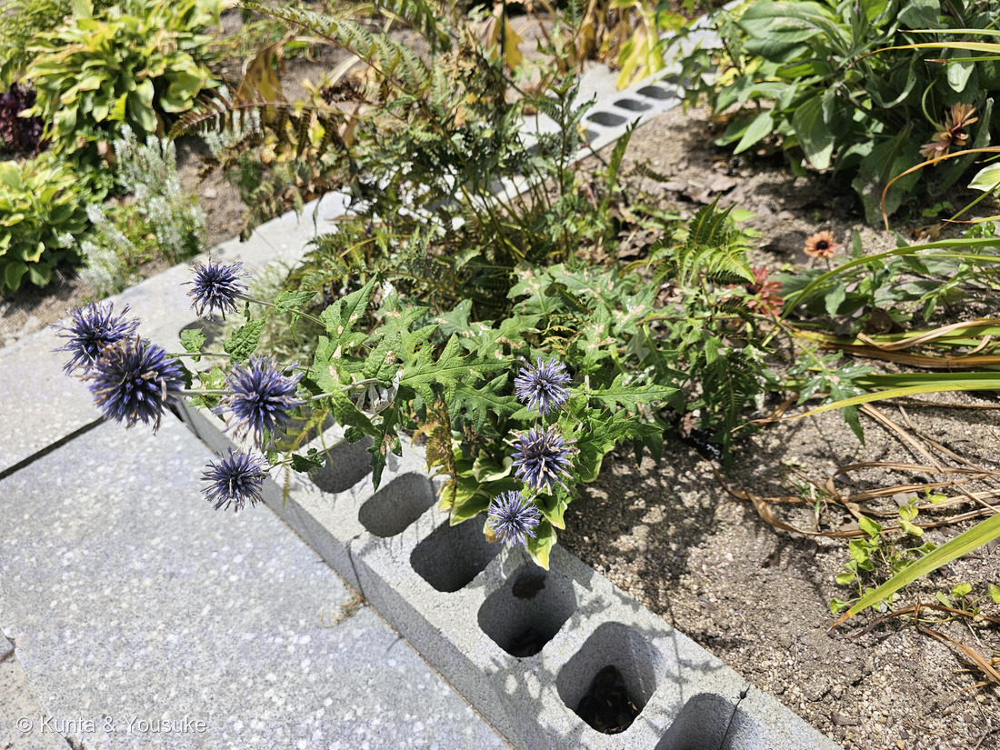
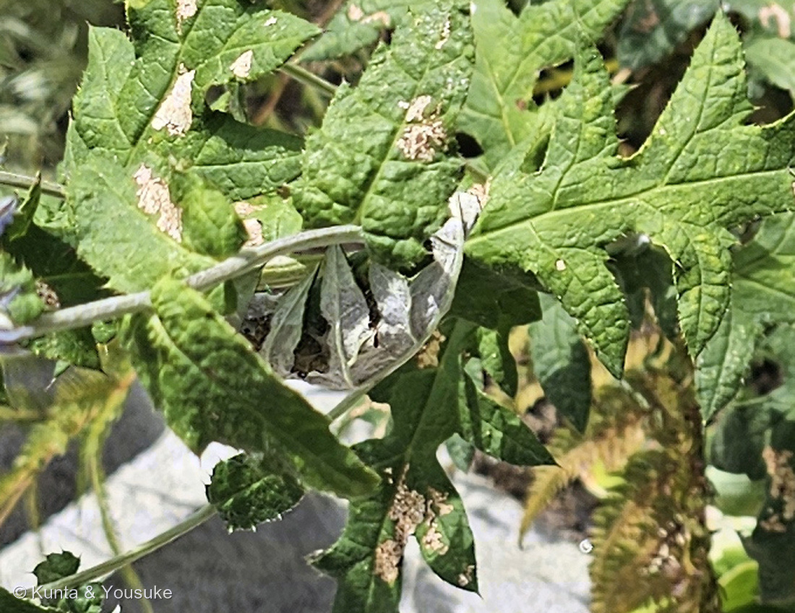

地図を読み込んでいるよ…
🔍 写真も地図も、押しているあいだ拡大して見られるよ（スマホは指を置いてすこし待ってね）。
🌍 の地図＝この子がもともと自生している場所を緑に。ルリタマアザミ（Echinops ritro）としては、南ヨーロッパ・東ヨーロッパ（スペイン東部からトルコ、ウクライナ、ベラルーシまで）と西アジア。⚠この株の学名を決めていないので、地図はその前提のものだよ。
⚠この地図は「ルリタマアザミ（Echinops ritro）だとしたら」の分布だよ——この株は名札が無くて学名まで決めていないから、そのつもりで見てね。⭐日本語版Wikipediaは「南ヨーロッパおよび東ヨーロッパ（スペイン東部からトルコ、ウクライナ、ベラルーシまで）、および西アジア原産」と書いている。⭐⭐⭐ここが225 ヒゴタイとの、いちばん大きなちがい＝あちらは日本・中国・朝鮮半島の子で、日本では絶滅危惧種。こちらはヨーロッパから来た園芸の花で、花屋にもドライフラワーにもふつうに並んでいる。⭐⭐同じヒゴタイ属の青い球なのに、身の上がまるで正反対なんだ——218 キンシャチと同じ形の話だね。⚠塗ったのは国の単位だから、実際の自生地よりずいぶん広く見えているよ。
⚠ 地図は国（日本と中国だけ県・省）までしか塗れないから、ほんとうの分布より広く見えていることがあるよ。地図はだいたいの場所。正確なところは、上の文を見てね。
ルリタマアザミ（瑠璃玉薊）
Echinops sp.（cf. Echinops ritro）⚠名札が無いので学名までは決めていないよ
別名 ウラジロヒゴタイ（裏白肥後体）／エキノプス／ブルーボール／英名 southern globe thistle
キク科 · Asteraceae（アザミ亜科 Carduoideae・アザミ連 Cardueae／ヒゴタイ属）── ⭐図鑑で13人目のキク科／⭐225 ヒゴタイに続く2人目のヒゴタイ属
燻太さんの一言「植物公園の植え込みに、ヒゴタイよりも紫色が強い株があったよ。もしかしてこの子がルリタマアザミなのかな？ 花は終わりかけだけど、総苞まで紫色なのは野生のヒゴタイとは区別できそうな特徴の1つだね。名札は見当たらなかったけど、他の園芸品種と同じ植え込みだったよ」── たぶん当たり。決め手は、名前そのものに入っていたよ
⭐⭐⭐⭐ 燻太さんの問い ──「もしかしてこの子がルリタマアザミなのかな？」
⭐⭐ 答え＝たぶん当たり。——⭐でも「たぶん」の中身を、証拠の強い順にならべておくね。
⭐⭐⭐ その一 ── 葉の裏が白い（いちばん強い手がかり）
- ⭐⭐⭐⭐ここがすごいところなんだけれど、決め手が名前そのものに入っていた。——ルリタマアザミ（Echinops ritro）の別名は「ウラジロヒゴタイ（裏白肥後体）」（日本語版Wikipedia）。⭐つまり「裏が白いヒゴタイ」。
- ⭐⭐⭐そして写真④に、めくれた葉が1枚写っていた。——まわりの葉の表はつやのある緑なのに、めくれた面だけ灰白色の綿毛におおわれている。⭐左上の茎も白っぽい。
- ⚠ただし、これはぼくの読み。——⭐うどんこ病の可能性を完全には排除できていない（⚠ただ、まわりの葉の表には白い粉が出ていないので、病気らしくはないよ）。⏳次に行ったら、そっとなでて確かめてほしいな——綿毛ならふわっとして、うどんこ病なら指に粉がつく。⚠ちぎらずに、なでるだけね（078の約束）。
⭐⭐ その二 ── 草姿がちがう（咲き加減では説明できない）
- ⭐⭐⭐225 ヒゴタイは、長い裸の花茎がすうっと立って、その先に球がついていた（225の写真④）。
- ⭐⭐この子は低くしげって、葉のすぐ上に球がある（写真③）。⭐ブロックの縁からあふれるように広がっているでしょう。
- ⭐英語版Wikipediaの Echinops ritro は「a compact, bushy herbaceous perennial thistle reaching 60 cm tall（こんもりと茂る、高さ60cmほどの多年草）」。⭐⭐これは咲き加減では説明できないちがいだから、下の総苞の色より確かな手がかりだと思う。
⭐ その三 ── 総苞まで青紫（燻太さんの指摘。ただし注意つき）
- ⭐⭐燻太さんの「総苞まで紫色なのは野生のヒゴタイとは区別できそうな特徴の1つだね」。——⭐そのとおりで、225のヒゴタイの総苞は白銀色だった（225の写真③）。⭐この子は写真②のように、トゲの先まで青紫。
- ⚠でも、ひとつ気をつけたい。——225の株は咲きはじめ（同じ日の14時48分）、この子は終わりかけ（11時14分）。⭐咲きすすむと色が変わる可能性を、この二枚だけでは排除しきれないんだ。
- ⭐⭐だから燻太さんが「特徴の1つ」と書いてくれたのは、ちょうどよい強さだったと思う。⏳来年、咲きはじめのこの子を見れば決まるよ。
⚠ そして、決めないこと
- ⭐⭐言えること＝「225 ヒゴタイ（Echinops setifer）ではない」。⭐上の三つ、とくに草姿と葉裏でそう思う。
- ⚠言わないこと＝「Echinops ritro である」と学名まで決めること。——名札が無いから（216で決めたルール）。⭐園芸で「ルリタマアザミ」として植えられる青い球には、近い別の種や品種もあるので、葉裏の白毛だけでは絞りきれない。
- ⭐⭐⭐これは215 オオオニバスで決めた「『決めない』と『何も言わない』はちがう」の、また一つの実例だよ。⭐名前は決めないけれど、ちがう相手は外せた。
- ⭐和名の「ルリタマアザミ」は、園芸での呼び名としてそのまま使わせてもらった。⭐⭐燻太さんの見立てを、そのままページの名前にしたよ。
この植物のこと ── 13人目のキク科・2人目のヒゴタイ属
- キク科ヒゴタイ属。⭐図鑑で13人目のキク科で、⭐⭐225 ヒゴタイに続く2人目のヒゴタイ属だよ。
- ⭐ルリタマアザミ（Echinops ritro）は「Steel-blue flowers（鋼のような青い花）」で、球の直径は 2.5〜4.5cm、草丈60cmほど（英語版Wikipedia）。⭐英名は southern globe thistle。
- ⭐原産は「南ヨーロッパおよび東ヨーロッパ（スペイン東部からトルコ、ウクライナ、ベラルーシまで）、および西アジア」（日本語版Wikipedia）。
- ⭐⭐和名は「ルリタマアザミ（瑠璃玉薊）」のほか、「エキノプス」「ウラジロヒゴタイ（裏白肥後体）」「ブルーボール」（同）。⭐⭐⭐「裏白肥後体」＝ヒゴタイの、裏が白いほう。⭐和名そのものが、225との見分けかたになっているんだ。
- ⭐⭐球のつくりは225と同じ。——ひとつぶひとつぶが1花だけの頭花で、それが何百も集まって球になっている（英語版Wikipedia・Echinops）。⭐燻太さんの言葉でいえば「紫色のヒマワリのブーケ」だね。
⭐⭐⭐⭐ 花屋の子と、草原の子 ── 同じ属の、正反対の身の上
⭐⭐ この子を225 ヒゴタイと並べると、ちょっと考えてしまう。
- ⭐ヒゴタイ＝日本の草原の花。⚠環境省の絶滅危惧Ⅱ類、広島県では絶滅危惧Ⅰ類。⭐人が草を刈らなくなって、いなくなりかけている。
- ⭐ルリタマアザミ＝ヨーロッパから来た園芸の花。⭐⭐花屋にも園芸店にもドライフラワーにも、ふつうに並んでいる。
- ⭐⭐⭐同じヒゴタイ属で、同じ「青い球」なのに、身の上がまるでちがう。——⭐218 キンシャチのときと同じ形の話だね（世界じゅうの園芸店にいるのに、野生ではほとんどいない）。⭐あちらは「園芸で栄えて、野生で消えかけ」。⭐⭐こちらは「栄えているのは外国の親戚のほう」。
- ⭐そしてこの株は、225のヒゴタイと同じ園の、同じ日にいた。——朝11時14分の花壇と、午後2時48分の日本庭園。⭐⭐3時間半のあいだに、ぼくらは属の両側に会っていたことになる。
参考：Wikipedia・ルリタマアザミ（Echinops ritro／キク科ヒゴタイ属の多年生植物／ルリタマアザミ（瑠璃玉薊）、エキノプス、ウラジロヒゴタイ（裏白肥後体）、ブルーボール／南ヨーロッパおよび東ヨーロッパ（スペイン東部からトルコ、ウクライナ、ベラルーシまで）、および西アジア原産）／Wikipedia (English)・Echinops ritro（Southern globe thistle／Steel-blue flowers／2.5–4.5 cm (1.0–1.8 in) in diameter／a compact, bushy herbaceous perennial thistle reaching 60 cm (24 in) tall, with broad prickly leaves／southern and eastern Europe (Spain to Turkey, Ukraine, and Belarus) plus western and central Asia extending to Mongolia）／Wikipedia (English)・Echinops（The capitulas are single-flowered ... surrounded by a multi-rowed sheath. Numerous capitulas form spherical inflorescences of the second order／tribe Cardueae, subfamily Carduoideae）／Wikipedia・ヤグルマギク（おまけ。Centaurea cyanus／キク科ヤグルマギク属の1種／属名の「Centaurea」は、ギリシャ神話に出てくる半人半馬の怪物ケンタウルスから／種名の「cyanus」は「あさぎ色の」／ヨーロッパ原産／日本には明治期に導入されたが、現在では帰化植物として野外でも多く見られる／ユキノシタ科のヤグルマソウと混同しないように）